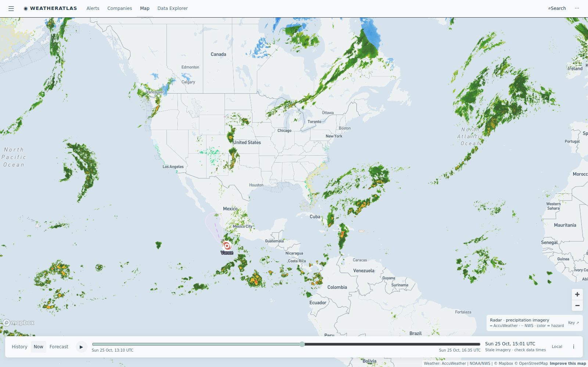

Daily severe-weather intelligence for LNG, refining, offshore, and terminal operators.

Live radar + active alert board from the AccuWeather-powered Atlas — captured ~15:00 UTC today.
| System / region | Status | Energy-asset impact |
|---|---|---|
| SE Coastal flood / gale pattern — Florida to Georgia | COASTAL | Coastal Flood Warnings, High Surf Advisories and Wind Advisories line the entire Florida east coast into Georgia; Gale Warnings cover the offshore Bahama corridors. US East Coast LNG terminal sites sit under wind and surf flags — berth scheduling and small-craft ops face the week's main marine friction. |
| Tropical Storm Vance — East Pacific | STORM | Vance weakened to a tropical storm after its Mexican landfall; residual rain and surge windows fade along the Pacific coast. Manzanillo LNG import corridor exits the delay window; tanker schedules normalize. |
| San Juan gas belt flood watch — Colorado / Four Corners | FADING | Flood Warnings shrink across La Plata/Archuleta counties while flash-flood watches persist over the Ignacio Blanco and Doe Canyon gas fields. Haul roads reopen; lightning counts dropped from 39 to near zero nearby. |
| SE Asia — Violent Typhoon In-Fa (144 mph) | TYPHOON | Violent-strength typhoon holds in the western Pacific; APAC LNG shipping lanes (Japan/Korea approaches) keep typhoon-avoidance routing. No US asset impact. |
Today's gap comes from the Pacific coast: at the Benicia refining complex, both feeds agree it is dry — but AccuWeather's enterprise hourly commits to 0% storm probability every hour through tonight with the full hour-by-hour cooling curve, while the free feed answers with gusts near 19 mph and no operational timing. Confident zeroes with timing are what turnarounds get scheduled on.
Dry offshore-wind day: AccuWeather holds 0% storm probability through tonight, low-70s°F afternoon, first sub-55°F clear night. Clean window for dock work and heavy lifts.
View live brief →Sunny and near 80°F: both feeds agree, AccuWeather commits the confident 0% hour-by-hour. Unconstrained loading day across truck and rail.
View live brief →